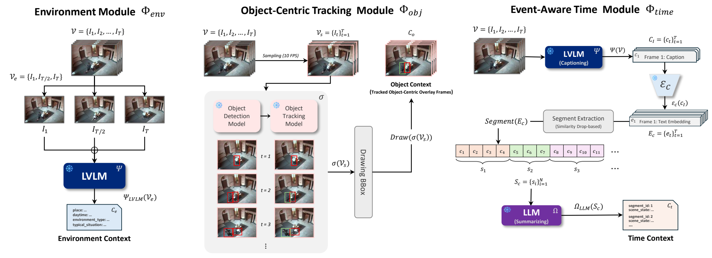
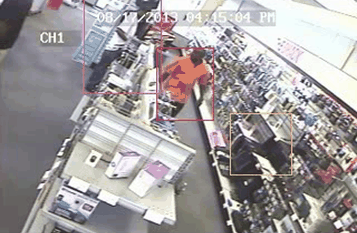
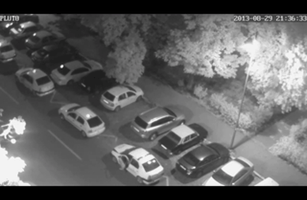

Environment Context
Three representative keyframes are summarized by an LVLM to capture place, daytime, environment type, and the typical situation implied by the scene.
Training video anomaly detectors is challenging due to the difficulty and cost of annotating diverse and rare abnormal events. Although recent large vision-language models enable training-free inference, existing approaches mostly rely on holistic inference over sampled video and may miss context-specific anomaly cues. We present CSI-VAD, a training-free video anomaly detector that identifies abnormal events across diverse contexts. The key idea is to decompose each video into three distinct contexts: environment, objects, and time. Because anomaly judgments are grounded solely in context-specific visual cues, CSI-VAD does not require predefined text prompts describing abnormal events or dataset-specific tuning.

Three representative keyframes are summarized by an LVLM to capture place, daytime, environment type, and the typical situation implied by the scene.
Detection and tracking overlays emphasize object locations, motion, and interactions while preserving the original scene appearance.
Caption embeddings are segmented by sustained semantic changes and summarized into ordered event states for temporal reasoning.
92.90
UCF-Crime AUC, Mean Ensemble, 256 frames
92.88
UCF-Crime AUC, Noisy-OR, 256 frames
86.08
UCF-Crime AUC under the recent protocol
72.16
UBnormal AUC, 32-frame setting
| Dataset | Frames | Baseline | Ours Max | Ours Mean | Ours Noisy-OR |
|---|---|---|---|---|---|
| UCF-Crime | 32 | 81.50 | 88.49 | 89.04 | 89.08 |
| UCF-Crime | 256 | 88.39 | 89.33 | 92.90 | 92.88 |
| UBnormal | 32 | 59.19 | 70.52 | 72.16 | 72.16 |
| UBnormal | 256 | 58.66 | 68.75 | 71.56 | 71.56 |
The context branches address different holistic inference failures. The final case shows a limitation when sparse sampling misses a brief abnormal moment.





@article{kim2026csivad,
title = {Context-structured Video Anomaly Detection with Large Vision-Language Models},
author = {Kim, Dongjun and Oh, Changjae and Cavallaro, Andrea and Mo, Jeonghoon},
year = {2026},
url = {https://dj991108.github.io/CSI-VAD/}
}